Project Frog was an innovative designer of kits to rapidly build energy-efficient, greener, healthier, and affordable buildings. The company was transitioning from start-up to the next phase of growth just as the 2008–10 economic recession brought virtually all new building construction to a halt across the United States. Conditions forced the company to rethink strategy, conserve cash, and further refine its product and its processes. The company’s Crissy Field project, completed in early 2010, provided a critically important demonstration of the company’s designs, and as the economy began to turn around in 2010, geographic expansion and new markets segments—possibly government, retail, and health care—were planned. Architect, designer, and founder Mark Miller; president Adam Tibbs; and new CEO Ann Hand also hoped to meet more aggressive margin targets that would enable the company to triple revenue and be profitable early in 2011, only five years after start-up. Venture capitalMoney provided to start-ups, often at high risk but with the possibility of high returns, in order for those companies to grow and bring new products to market. funding from RockPort Capital Partners and investor exit expectations required rapid ramping up of projects in the short run. Miller summarized the overlap of Project Frog’s products and lead venture capital investor’s interests: “Their vision for energy and resource efficiency and innovative products is perfectly aligned with the Project Frog approach: to be better, greener, faster and cheaper.”Project FROG, “Project FROG, Makers of Smart Building Systems, Closes Series B Funding with RockPort Capital Partners,” news release, Business Wire, November 19, 2008, accessed January 28, 2011, http://www.thefreelibrary.com/Project+,+Makers+of+Smart+Building+Systems,+Closes+Series+B...-a0189242085.
In late spring 2010, having just moved from an operating role to a board position, Miller was focused on strategic concerns and how best to explain and sell his product to a broader range of buyers, including the military and potentially disaster-relief agencies. The Project Frog office, a short walk from San Francisco’s Embarcadero district, was informal and open. Although Miller occupied the only office with a door, it was bounded by two glass walls and a clear acrylic panel he used as a whiteboard. He could often be found crisscrossing the office or standing at someone’s workstation or at the table where Tibbs sat. Meanwhile, new CEO Ann Hand had set up her computer, sharing the long table with Tibbs. She sought to translate her experience at BP as senior vice president of global marketing and innovation into a strategy for Project Frog to build its brand and scale up. The senior team saw huge potential in Project Frog, but they had many decisions to make and priorities to set. Most important, they wanted to ensure Project Frog met key business goals as they focused on preparing to give the venture capital investors a successful exit in just a few years, either taking the company public or finding a buyer.
Mark Miller was no stranger to new design and enterprises in architecture. He graduated from Haverford College in 1984 and earned his master’s in architecture and a prestigious Keasbey Fellowship at Cambridge University. He went to Kuala Lumpur as a Henry Luce Scholar, helping design refugee camps among other projects and deepening his strong interest in the relationship between culture and architecture. He also was certified by the American Institute of Architects. Miller later served as director of corporate and technology projects and director of the Asia Projects Group for the firm Kaplan McLaughlin Diaz in San Francisco, where his portfolio included Euro Disney. In 2000, he used $50,000 in personal savings to start MKThink, a design and architecture firm in San Francisco focused on innovative architectural design. Staff that included anthropologists conducted careful human behavior research to understand what people in work spaces truly need for high productivity and high performance. MKThink designed advanced offices and campuses for Sun Microsystems and General Electric’s Warren Tech Center in Michigan and worked extensively with Stanford University on several projects, including a dozen at the law school, work for the education and engineering schools, and the business school’s relocation analysis.
Around 2000, Miller began to think seriously about the education market and temporary or portable classrooms, the trailers that frequently begin as stopgaps and become permanent features of many schools despite their unhealthy interior environments and energy inefficiency. Miller said, “Design should speak to the issues of the day, and technology needs to enable the human condition, not dominate it. So what are the issues of today? Well, we’ve got a problem: 35% of the kids in the state of California go to school in out-of-date trailers. That’s an issue of the day. It’s how do you educate kids in public schools and what are their facilities like in solving that systematically? We have the technology, we have the knowledge. We can solve this.”Andrea Larson and Mark Meier, Project FROG: Sustainability and Innovation in Building Design, UVA-ENT-0158 (Charlottesville: Darden Business Publishing, University of Virginia, 2010). Other quotations in this section, unless otherwise noted, also refer to this case study.
Solutions oriented, Miller saw an opportunity to meet the challenge. While relatively cheap, how well did existing buildings address how students learn and what teachers need to be high-performing instructors? How could technology and design come together to create healthier schools while addressing the desperate need for more classrooms as well as rising and more volatile energy costs? Why accept existing answers? Smart buildings were emerging as alternatives. Estimates were that school overcrowding and insufficient tax revenues to government to pay for new school facilities would continue to force public school students into trailer classrooms, and this was not just California’s problem.
MKThink had always had a research component that enabled it to consider problems in its field, write half a dozen white papers a year, and present at conferences. By 2004, that research focused on the problem of unhealthy learning environments for children’s education. After all, 60 percent of the firm’s work was related to education. The group knew it had a solution, but not yet a new company, when it devised the basic idea for modular buildings that would be better places for kids to learn and more energy efficient. “I’m making a product that makes a system that becomes a kit. You could call it Lego and Tinker Toys on steroids,” Miller said. Witnessing the devastation and aftermath of the 2004 Indonesian tsunami and Hurricane Katrina in 2005 in the United States confirmed for Miller that better buildings also needed to be constructed quickly. “That was the birth of Frog”—Flexible Response to Ongoing Growth—Miller told GreenerBuildings magazine. “Frogs are green. They only jump forward and—one of my favorites—each frog is a prince with the message, ‘Do not be afraid of what’s not familiar.’ Because if you embrace it, it is a prince.”Leslie Gueverra, “Project FROG Becomes a Cinderella Story for Modular Construction,” GreenerBuildings, November 25, 2008, accessed January 28, 2011, http://www.greenbiz.com/news/2008/11/25/project-frog-becomes-cinderella -story-modular-construction.
By late 2005, Miller had decided to form a new company with two MKThink partners and two others, an industrial designer and a metal fabricator with a strong record of working well together. Together with angel investors, family and friends initially contributed $1.2 million to launch Project Frog in 2006. Their driving mantra was “better, greener, faster, cheaper.” Their mission was to “provide global impact and market leadership in green building products and systems.” Miller emphasized what Project Frog was not: “We are not a construction company. We are not about better trailers.”
The metal fabricator, Bakir Begovic, became board vice chairman for Project Frog. He received his BS in mechanical, industrial, and manufacturing engineering from California Polytechnic State University in 1996. He had previous experience in various high-tech firms. Begovic was founding principal of B&H Engineering, a semiconductor manufacturing and technology firm with an emphasis on metal fabrication, manufacture, and assembly. He was also chair of the board of directors for Acteron, a coating company.
Indeed, Project Frog needed such architectural and high-tech manufacturing expertise because it hoped to combine and optimize the best of modular and traditional construction—cheap and mass-manufactured and also energy efficient and conducive to occupant comfort and productivity. To achieve all these results, Project Frog needed to innovate. Since 1947, productivity in manufacturing in the United States had increased sevenfold. In construction, in contrast, productivity had actually declined slightly. If Project Frog could harness the efficiency of manufacturing and bring it into the field of construction, the company could radically outperform the industry, which was used to margins of only a few percent. Instead of conceiving of a classroom as the culmination of a long, unique construction process involving myriad players, Miller conceived of it as a “technology-infused product,” likening it to an iPhone, that could be produced from standardized parts and plans on a large scale in a variety of locations. Project Frog would thereby consolidate many tasks that were normally parceled among architects, engineers, and contractors, making the process more efficient and hence cheaper for the consumer and more profitable for Project Frog. In some sense, buying a Project Frog building was like purchasing a PC kit or an IKEA bookshelf: a lot of thought went into designing and configuring the components, but it was up to the end user to assemble them or hire someone who could.
The company’s buildings, erected from standardized kits it designed and contractors assembled, would require less energy and materials to build and to operate. They offered spacious layouts designed to aid user productivity, health, and comfort. Units offered abundant natural light, state-of-the-art clean air systems, high-performance heating, ventilation, and air-conditioning (HVAC) systems, customized microclimate controls, and excellent acoustic performance. They also could be built faster because they did not require a new architectural design, engineering analysis, lengthy approval processes each time, nor did they require as much work and coordination of supplies from contractors. Project Frog modules also used recycled material, from steel beams to carpets and tiles, and were designed to support green “living” roofs and solar panels. Finally, more efficient design meant fewer machines and less labor were needed to assemble a building with fewer materials wasted. The net impact could be significant: even though construction was about 5 percent of the US economy, buildings accounted for about 40 percent of energy use and produced about two-thirds of landfill waste.
Sophisticated design and modeling software enabled this reconceptualization from construction process to manufactured product. Project Frog’s engineering designers began with SolidWorks, software used to design products as diverse as airplanes and cell phones. The designers infused into their plans and predictive performance models data about the actual environmental performance of building materials—data that were regularly updated with measurements from new buildings. This design and analysis became the core of Project Frog’s competence and intellectual property, which was the subject of several patent applications. The company also consulted Loisos+Ubbelohde, based in nearby Alameda, California, to help develop the energy modeling for its initial Project Frog kit system. That energy firm had previously worked on the Gap’s headquarters in New York and Apple’s Fifth Avenue store.Sarah Rich, “Project Frog’s 21st-Century Buildings,” Dwell, April 1, 2009, accessed January 30, 2011, http://www.dwell.com/articles/project-frogs-21st-century -buildings.html. George Loisos and Susan Ubbelohde had directed significant government and university research programs on building energy use and efficiency, and their collaboration was a significant addition to the Frog design team.
Better control of manufacturing allowed Project Frog to use a set of basic parts with minor modifications to produce an array of products. Project Frog chose, however, to outsource the actual fabrication to others instead of having to build its own capacity. Project Frog sought partners to supply the steel structure, glass panels, curtain walls, ceilings, and finishing, such as external siding or carpets. A reporter for Forbes magazine described the result: “They snap together for a not bad look, as if a bunch of Swedish designers got hold of a really big Erector set.”Quentin Hardy, “Ideas Worth Millions,” Forbes, January 29, 2009, accessed January 30, 2011, http://www.forbes.com/2009/01/29/innovations-venture-capital- technology_0129_innovations.html.
Miller chose to focus on the educational market in the early days of the company. Education is the largest segment of the $400 billion construction market, accounting for about one-fourth of both the traditional and modular market. Furthermore, few people are involved in making the decisions relative to the size of the project, schools generally desire to go green and efficient, and they don’t have a lot of money but often need buildings quickly. Educational institutions have long needed to add or subtract space rapidly as schools and communities change. California had issued bonds at various times since 2002 to raise money to construct new schools to keep pace with its population. Compounding that growth, California was trying to reduce its average class size, requiring even more space. Hence when funding was available, construction could easily fall behind demand. Miller had seen Frog’s previous portable, temporary choices.
Schools would also save time on design because they would choose from a limited number of prefabricated choices and configure and combine them as needed. Project Frog’s designs were precertified in California by the Division of the State Architect, saving about six months on permitting individual projects. (The Division of the State Architect oversaw the design and construction of K−12 schools and community colleges and also developed and maintained building codes.) The State Allocation Board Office of Public School Construction noted that it took two to four years to design, build, and inhabit an average school for two thousand students, while portable classrooms took nine to fifteen months to plan and inhabit. Finally, students learned better when indoor air and light quality were better, thus schools had often been proponents of green construction.
Studies from 1999 through 2006 provided evidence of the link between green design and student performance. Window area correlated with improvement in math and reading, better air reduced asthma and other ailments that affected attendance, and improved temperature control increased the ability of students and teachers to concentrate. Meanwhile, money saved from operating more efficient buildings could be used to educate students. Project Frog thus used passive design, large windows and coatings, and other methods to improve learning and cut costs. California had strict energy-efficiency standards under Title 24, and the state specifically allotted $100 million in 2009 for High Performance Incentive grants to improve energy efficiency or maximize daylight in K−12 schools.
That grant, however, was still in the future when Project Frog began with two pilot projects in California, a preschool and racing school. The results pleased customers, but Project Frog was not making enough money from them. The company received $2.2 million from angel investors in 2007 and had revenue around $3.7 million with sixteen full-time employees. However, it was burning about $300,000 per month and had missed project completion deadlines. Nonetheless, in 2008 Miller projected to generate over $50 million in revenue by 2010. Then portents of a recession began to appear.
Project Frog gained momentum with a number of projects (see Note 7.3 "Project Examples"). The following are the most notable ones:
Figure 7.1 Project Frog Modules Linked to Make the Child Development Center, City College of San Francisco
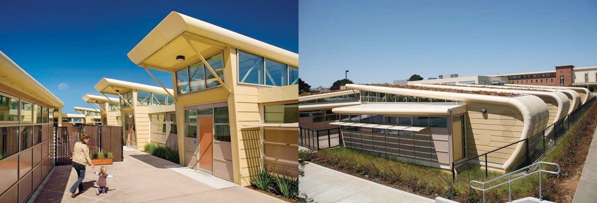Figure 7.2 Interior of Project Frog Demonstration Classroom
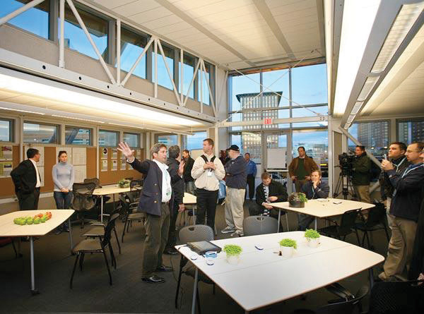Source: Project Frog.
Figure 7.3 Exterior of Project Frog Zero at Greenbuild 2008
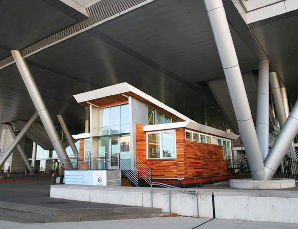Source: Project Frog.
Figure 7.4 Crissy Field Center, San Francisco
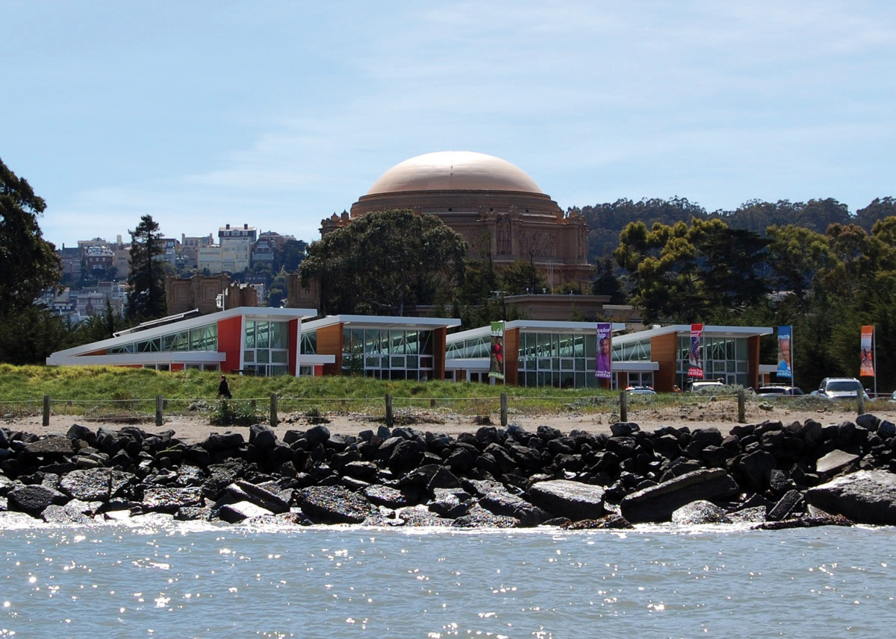Source: Project Frog. A virtual tour is at http://www.projectfrog.com/gallery/tour.
Figure 7.5 Project Frog Plan
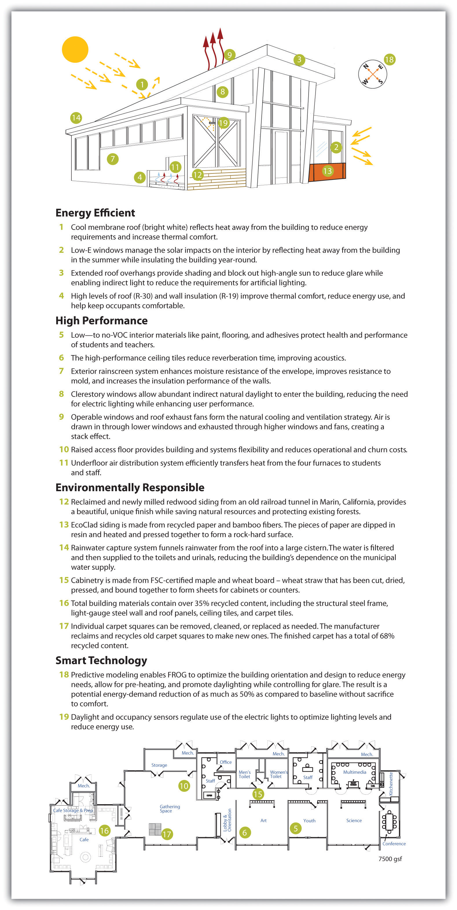Source: Project Frog.
Figure 7.6 Diagram of Project Frog Office
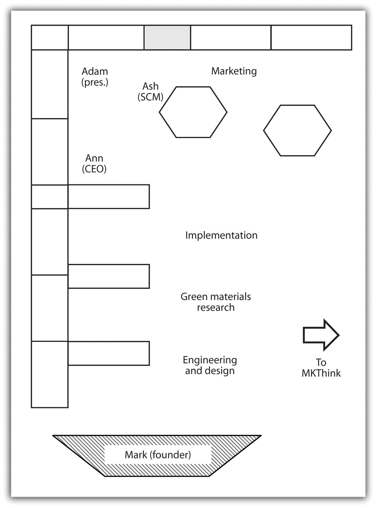Customers were pleased with the buildings’ performance. Project Frog’s purchase price was 25–40 percent lower than traditional construction. Operating costs could be as much as 50–70 percent lower than conventional or trailer construction. The new Frog Zero units could claim 75 percent energy demand reduction through use of occupancy and daylight sensors, smart wall panels that absorbed and reflected light, natural light optimization, glare control, superior air quality, microclimate customization through advanced climate control technology, and enhanced acoustics. Carpeting and interiors were screened for toxicity. Conventional portables typically were equipped with pressed-wood furniture, vinyl walls, and new paint and carpet; these alternatives were superior to standard options, which could release invisible toxic gases known as volatile organic compounds (VOCs). The most advanced line, the Frog Zero buildings, produced more energy than they used and were energy neutral. Built from renewable or recyclable materials, the units could be disassembled easily and were designed with 100 percent recyclability potential.
However, the major appeal of any unconventional classroom construction was typically price. Project Frog’s California prices were between prices for traditional construction and portable or trailer classrooms. In California, laws had actually mandated that 30 percent of new classroom construction be portables, to avoid overbuilding classrooms that would become vacant when birth rates declined. But some school districts facing unexpected and shifting population demographics found themselves housing 50 percent of their students in portables that ranged from relatively new to over forty years old. In Florida, 75 percent of portables that were intended as temporary structures were later classified as “permanent” classroom spaces. Estimates for 2009 placed six million students in portable classrooms. In 2003, it was estimated 220,000 portable classrooms served public school systems nationwide. Perception of lower quality was often justified; portables were poorly suited to music and language learning and they had heating and cooling inefficiencies, absence of natural light, and poor air quality, all of which undermined performance of students and teachers.
As of June 2009, all but seven states had some kind of energy-efficiency requirements for government buildings.Pew Center on Global Climate Change, “Building Standards for State Buildings,” June 16, 2009, accessed January 30, 2011, http://www.pewclimate.org/what_s_being_done/in_the_states/leed_state_buildings.cfm. About half those states required LEED Basic or equivalent certification specifically, and increasingly, states such as California and municipalities such as Boston and San Francisco required any large new construction or renovation to meet green building standards. LEED, created by the US Green Building Council (USGBC), was widely used to measure building efficiency and environmental impact and came in various levels, from Basic to Platinum. Other rating systems existed, especially as LEED Basic came to be considered too lax or inappropriate for homes or other structures, but LEED continued to be the industry norm. Buildings earned points toward certification based on site selection and design, environmental performance, and other attributes. The US General Services Administration (GSA), which oversaw many federal properties and purchases, began requiring LEED Silver certification in 2009. A study by McGraw-Hill Construction calculated the size of the green building market to be $10 billion in 2005 and $42 billion in 2009, and it estimated the market would be worth between $96 billion and $140 billion by 2013, with the education sector accounting for 15–30 percent of that market.McGraw-Hill Construction, 2009 Green Outlook: Trends Driving Change, accessed January 26, 2011, http://construction.com/market_research/reports/GreenOutlook.asp.
Meeting those standards and the needs of the client, however, traditionally involved an array of people. Architects devised plans and construction engineers decided how to implement them safely. Government agencies had to approve those plans, and then an array of craftspeople—masons, carpenters, electricians, glaziers, and so on—were marshaled by a general contractor to execute the plans. Each new participant took a slice of the profit and decreased efficiency by not having an influence on the end-to-end life-cycle design but only on one small piece. Furthermore, involving more people increased the chance for delay and cost overruns, and the longer a project continued, the more likely weather or supply disruptions could slow it further. A single building could take years to plan and build. Hence construction typically had low margins and was unattractive to venture capitalists.
Indeed, when Project Frog sought investors, it found itself being compared to steel manufacturers. Investors had no idea how to value the company accurately: it wasn’t traditional construction, nor was it traditional manufacturing. Project Frog combined many of the previously disparate aspects of construction in its predesigned, preapproved kit, which sped construction and limited the number of people involved, including distinct craft unions that would fight for their shares of the project. That increased the company’s profit while decreasing cost to clients. Miller encountered one other problem he didn’t anticipate: Project Frog was too fast. Schools typically forecast building new classrooms five to ten years out and had correspondingly sluggish procurement processes. Consequently, schools had a hard time determining how to buy something that could be standing and in use six months later.
Project Frog president Adam Tibbs had shown a proclivity for entrepreneurial initiatives early, having started and sold a lawn-mowing company as a kid before earning his bachelor of arts in English from Columbia University in 1995. He worked as an editorial assistant for the Columbia University Press, where he gravitated toward digital publications, and then joined Nicholson NY, an Internet and software consulting company, where he managed major projects from 1996 to 1998. In 1999 he founded Bluetip, a software development and incubator company. Bluetip spun off and sold several companies before Tibbs entered real estate development in New York and the Virgin Islands. He bought a house in the country and set out to write a novel. He also consulted for nonprofits and often borrowed Miller’s office when he came to San Francisco, where his friend and eventual wife worked at MKThink. Eventually he went to work for Project Frog, where he arrived as president in June 2007.
In 2008 Project Frog began to redesign its base module and reorganize its business processes. Tibbs noticed that the original Project Frog designs were simply overbuilt; the same result could be achieved with less material and less design time. Tibbs was quick to note, “If you remove green from the table, the way we do things is still better. The innovation is business processes in an industry that doesn’t have any business processes.” Looking back, Tibbs recalled, “We stopped selling and redesigned from the ground up. We tried to bring intelligence in-house and keep it there.” The international law firm Wilson Sonsini Goodrich & Rosati was brought in to “clean up” the company’s procedures and documentation.
Meanwhile, Miller and his team examined their previous projects and relied on input from their own green material researchers as well as suppliers, especially steel manufacturer Tom Ahlborn, about how to improve environmental performance and efficiency. Ahlborn was based in California. He made the frame for the modules and also assembled them on-site. Hence his experience allowed engineers to make improvements along the entire life cycle of the project. After eighteen months of design, the 1,280-square-foot Frog 2.0 was unveiled at the Greenbuild Conference in Boston, where contractor Fisher Development Inc. assembled the demo module in only seven days to allay fears that Project Frog would miss deadlines again. The new design also earned California’s Division of State Architect (DSA) precertification and an award from the Modular Building Institute. The new Frog 2.0 was anticipated to be 25–40 percent cheaper to build and 50–75 percent cheaper to operate, which meant it was baseline LEED Silver and could potentially be energy neutral when outfitted with photovoltaic panels (part of the Frog Zero option.) The components were recyclable or compostable and engineered for seismic design category E (which included San Francisco; the highest category was F.) Moreover, the building could withstand 110-mile-per-hour winds and be assembled in one-half to one-fifth the time of a traditional building. Since the basic plans had to be approved by engineering and architecture firms in fifty states, Frog 2.0 also streamlined documentation and certification.
On the financial side, the Wilson Sonsini law firm introduced Project Frog to a few venture capital companies. A deal for $8 million in Series B funding closed in November 2008. A partner from the venture capital fund joined Project Frog’s board of directors. The partner said of the new partnership, “This is a truly pioneering company. Project FROG is developing dynamic concepts from a product design and manufacturing platform and applying those innovations to the building industry. Project FROG has a critical grasp on the technical and market advancements that will be game changers in the green building industry. These attributes solidify Project FROG’s position as a leader in this fast growing marketplace.”Rockport Capital, “Project FROG Closes $8MM Series B Financing Led by RockPort Capital Partners,” press release, November 19, 2008, accessed January 30, 2011, http://www.rockportcap.com/press-releases/project-frog-closes-8mm-series-b-financing-led-by-rockport-capital-partners.
Though still $4 million short of its goal, Project Frog kept costs low and in 2010 raised an additional $5.2 million through debt financing and promissory notes.Project FROG, “Project FROG, Makers of Smart Building Systems, Closes Series B Funding with RockPort Capital Partners,” news release, Business Wire, November 19, 2008, accessed January 30, 2011, http://www.reuters.com/article/2008/11/19/idUS111863+19-Nov-2008+BW20081119. In 2008, Project Frog won the Crunchies Award for Best Clean Tech company, given for compelling start-ups and Internet or technology innovation. Things continued to look up for the company when the Office of Naval Research asked the venture capital community about green buildings. The military was particularly interested in energy efficiency after paying exorbitant sums to keep fuel on the front lines in Iraq and Afghanistan. It had begun to see energy efficiency as a national security issue and sustainability (making sure the military had a positive footprint in terms of community, ecological, and health impacts of its operations) as key to continuing to operate bases in communities around the world. The investors recommended Project Frog, which eventually began work with the Navy on projects in Hawaii.
Even as Project Frog continually strove to distinguish itself from traditional trailer manufacturers, competition emerged from other modular groups. Miller believed that modular offerings sacrificed quality and green features. Nonetheless, they remained attractive to some clients such as cash-strapped schools.
Project Frog needed a way to stay ahead of the competition. Its improved Frog 2.0 certainly would help, and Frog Zero was the first energy-neutral building of its kind; streamlining business practices was now a priority. Project Frog turned to its supply chain to boost efficiency and profit.
Ash Notaney had worked with Booz Allen on strategy and supply-chain issues for twelve years. Through a mutual friend, he met Adam Tibbs and began to offer advice to the company about supply-chain management. In January 2010, he was hired. He noticed right away that people at Project Frog talked to one another; meetings were rare, which kept people available at their desks for interaction; the hierarchy was flat; and there were no corporate silos. “I don’t think we even had an organizational chart until one of the investors asked to see one,” Notaney recalled.Andrea Larson and Mark Meier, Project FROG: Sustainability and Innovation in Building Design, UVA-ENT-0158 (Charlottesville: Darden Business Publishing, University of Virginia, 2010). Other quotations in this section, unless otherwise noted, also refer to this case study. The spirit of collaboration was reflected in the office space: there were no cubicles, just tables where people worked side by side. Notaney literally sat with marketing to one side and the president to the other. Exposed HVAC conduits and hanging lights marked the building for what it was: a renovated roundhouse for streetcars that used to run along the Embarcadero. About two dozen employees were at work in the office on a given day, and probably two-thirds were under thirty years old. Clear plastic bins held sample materials from Project Frog buildings: exterior siding, interior wall, flooring, even bolts. Engineers continually manipulated plans on their SolidWorks screens.
Notaney began working with suppliers to collaborate more with Project Frog. The Crissy Field, Vaughan, and Jacoby projects used the same company to manufacture and assemble most of the kit. That company was Ahlborn Structural Steel. Tom Ahlborn, in particular, had been an excellent partner, continuing to suggest ways to improve the steel manufacture and assembly. Project Frog in return helped him cut costs and shared projected sales and volume of purchases over the coming year with increasingly detailed projections for closer time periods. Ahlborn became the preferred vendor for steel in any project unless contract stipulations or geography made it impossible. The company also used the same construction firm, Fisher Development Inc., for three of its installations. Fisher was based in San Francisco but worked nationally as a general contractor and construction manager. The company had worked with clients such as Williams-Sonoma and Hugo Boss and had assembled Project Frog’s demonstration module at the Greenbuild Conference. Fisher had also worked on the Watkinson School in Connecticut. Although no single Project Frog building gave Fisher much money, he appreciated that construction was predictable and short, which allowed him to finish a project at a profit and move on. Moreover, he believed Project Frog was ripe to expand into markets beyond education and consequently all the small buildings would begin to add up.
Meanwhile, Project Frog worked with YKK and its partner Erie Architectural Products to procure exterior glass panels and curtain walls. The new glass panels could be installed legally and technically by steel unions, which meant Project Frog’s contractors no longer needed to have glaziers on-site. The panels could also be modified for optimal performance in different environmental conditions. Roof panel suppliers were also involved, but to date the most effective relationships had been with Ahlborn and Fisher. Notaney was working to develop strategic partnerships with other suppliers.
The relationship with Fisher made sense for Tibbs as well. “We pick a guy we trust to fulfill our brand promise and make it a pleasurable experience,” he said. After all, the company wanted to meet aggressive targets for margins and revenue. The company needed to sell the value of the learning experience its buildings created. Further, Tibbs wanted the company to grow not just by getting more deals in more markets but by keeping more of the money for Project Frog from each deal by integrating more features into its own manufactured kit. A switch to ceilings that integrated insulation and panels as well as the structural frame moved the company further along that path.
Tibbs continued to push for automating more of the design, improving algorithms, filing patents, and infringing on the company’s earlier patents. He brought in GTC Law Group of Boston for patent advice. Tibbs wanted a way for clients to select features through online models and see the corresponding performance characteristics of the different designs. Once a plan was chosen, the computer could confirm the design, print a plan for the architect, and print any necessary parts designs and orders for suppliers.
In 2010, Project Frog raised an additional $5.2 million through convertible notes. That brought another venture capital director onto the company’s board. He joined Ann Hand, who had a spot by virtue of being Project Frog’s CEO; Miller, who had moved out of daily operations not long after Hand had arrived; and the lead venture capital partner from the B round. The fifth seat on the board, by charter designated for an independent member, remained vacant.
By summer of 2010, the market seemed to be improving, and Project Frog was on track to double its revenue that year. In fact, Project Frog was poised to flourish in a market that had changed radically from 2007. Miller said, “We mitigate risk. Clients are smarter and much more rigorous about goals and timeframes. Everyone wants to do green. That’s changed. It has to be green, and it has to be cost-effective. They go together. That’s just the way it is now.”
The Crissy Field Center in Golden Gate National Park attracted 1,500 people to its grand opening and made a strong impression on visitors. Hundreds of people became Facebook fans of Project Frog. Guided tours of the center continued to draw many visitors through spring 2010 as did the building’s café. Miller said with pride, “People walk into Crissy Field and say, ‘I want one of these.’ People don’t usually buy buildings that way.” But now with Project Frog, they could. In 2010 Project Frog had something very tangible and attractive to sell.
Miller continued to ponder how best to present his product. The company offered a unique synthesis of product and technology; sometimes he called it a product-oriented technology company. He liked the idea of portraying Project Frog as an integrated space and energy package in one leased product rather than a building with a mortgage that would also cut a client’s energy costs. Furthermore, if prices reached the levels they had in 2007, breakeven could be cut in half. Miller wanted to underline that in a way people could understand and incorporate into their accounting. He worried, however, that the company might default downward into a conventional construction company if it did not maintain its industry expertise and vision for innovation at the edge of the industry.
The decision about an exit strategy also remained. Project Frog could go public. It also could court potential buyers. Yet many attitudes still reflected the confusion early investors felt about Project Frog’s business. The venture capitalists struggled to find comps (comparable firms) to do the valuation. Various corporations with related business entities had expressed interest in investing in Project Frog. Each saw something it liked because the company integrated so many previously distinct businesses. Tibbs conjectured a global construction company or European modular building maker could make a bid. “We have about a three-year expectation to exit,” Tibbs said. “I’m hoping to accelerate that.” The whiteboard behind him was covered with red marker goals and graphs for the coming years. “If things go according to plan, we should be profitable by Q1 next year. For me, going public would be more fun because I’ve never done that before.”
Project Frog and its venture capitalist investors appeared to share a business philosophy about green and what Mark Miller referred to as “edge of the grid energy areas”—the overlooked but attractive opportunities for innovation now that businesses and consumers were interested in saving energy and willing to invest in technology controls. The buyer had to get over the conventional “first cost” mentality, however. The new approach required monetizing the life cycle of the solution. It might mean taking facilities off the balance sheet.
Mark Miller was interested in these options, but his mind was focused on more immediate concerns:
We have to make sales and we have to execute. We have the product designed and defined. Now we need revenue. We’re inventing a category though. The VCs understand that and they like us, but aren’t sure how to think about us. We were one of the last VC deals done before the economy collapsed. And of course the market stopped for us too. I mean schools have no money and states are basically bailing out. And sales cycles are long because buyers have to be educated. We have our work cut out for us.
Figure 7.7 Energy Consumption by Sector in the US Economy
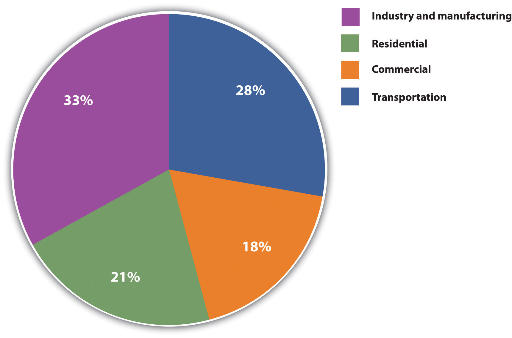Source: Energy Information Administration, Annual Energy Review 2010, http://www.eia.doe.gov/aer/txt/ptb0201a.html.
Award Criteria: City College of San Francisco, Child Development Center
Thermal Comfort Strategy
The units at CCSF strongly support thermal comfort, enhancing occupant productivity and satisfaction. The number of operable windows for ventilation exceeds minimum requirements. The efficiency/quality of thermal comfort with the Raised Floor System is superior to overhead or wall mounted, fan diffused systems in most modular units. Air is supplied by multiple floor diffusers, creating an upward flow of fresh air via natural convection and exhausted through ceiling return outlets, unlike overhead systems that mix cool and heated air near the ceiling, spending energy forcing it down to user zones. Cool air is supplied at higher temps/lower velocity than overhead systems, reducing discomfort from high air speed/cold spots. Energy savings are due to diffusers’ close proximity to occupants and user-defined location, direction, and flow; the living roof that supports consistent indoor temperatures; R-19 rigid expanded polystyrene (EPS) in the roof and the floor; and R-15 EPS in the walls.
Indoor Air Quality Strategy
The CCSF classrooms exemplify FROG’s effort to circumvent the health problems, low test scores and high absentee rates posed by indoor air pollution. We use Low/No VOC carpet tiles, ceiling tiles and interior paint. Sealants meet/exceed the requirements of the Bay Area Air Quality Management District Regulation 8, Rule 51. Intersept antimicrobial preservative in the carpet tiles combats a broad spectrum of bacteria/fungi. BioBlock inhibits the spread of mold/mildew on ceiling tiles. Under floor air distribution delivers outside air from below directly to the occupants’ breathing zone. New air replaces contaminated air instead of diluting it with old air, the method of most portables. FROG units allow for up to 100% outside air, providing clean air to the occupants, reducing any remaining VOCs/bacteria in occupied areas. Unlike most portables’ fiberglass batt insulation, FROG’s Ultratouch cotton fiber insulation resists microbial growth; doesn’t cause skin irritation; formaldehyde-free.
Daylighting Strategy
The FROG building’s integrated system of customizable window wall units, sunshades and clerestory windows allow the interiors of the CCSF classrooms to be illuminated far more naturally and efficiently than any other modular classroom. The customizable window wall system (85% of the exterior walls) consists of interchangeable window/wall panels of user-specified colors /materials. Each 2’× 4’ panel can be high performance glass or insulated composite panel. Design customization allows a perfect balance between the need for abundant light in some areas (i.e. play/learning rooms) and less in others (i.e. nap areas), shadow reduction and/or heat gain. Sunshades are mounted to the south and west side of the curtain walls to protect each classroom from an excess of direct sunlight and reduce glare. A signature feature of FROG’s structure is the unique clerestory. Each unit’s sloped roof assembly is enveloped on three sides by clerestory windows that flood the unit with natural light.
Acoustic Strategy
The acoustical ceiling panels used at CCSF contain a 70% Noise Reduction Coefficient (NRC). This reduces most echoing within the building, thus increasing speech clarity. In addition to the R-19 roof insulation (with space for an additional R-19), the living roof reduces outside noise transmission. The under floor air distribution system implements a pressurized plenum and harnesses natural convection to assist the airflow out of the floor diffusers and directly into the occupied zone, eliminating the noisy ducts of traditional portable models carrying air being pushed at high velocities. Most modular classrooms use a wall-mounted HVAC system, resulting in high levels of noise. Project FROG eliminates this excess noise with its Powerpak, which places the HVAC system in an exterior room separated from the learning area by an auxiliary room or restroom and an extra thick wall filled with sound-attenuating insulation.
Energy-Efficiency Strategy
The FROG units at CCSF use high quality recycled/recyclable materials, including recyclable acoustic ceiling tiles (75% recycled content (RC)); raised floor tiles (33.9% RC:1.8% post consumer (PC)/22.1% post industrial(PI)); Ultratouch batt insulation (85% PI recycled natural fibers). Carpet tiles (44% RC) and vinyl tiles (92% RC, 25% PC) can be replaced individually (instead of the entire floor) and reused. Most modular buildings consist of wood; all FROG units are steel (up to 100% RC) which can always be recycled. Non-steel materials (i.e. wood) are field cut, creating excess waste; FROG parts are cut in a metal shop and all excess is recycled. The FROG units are designed for minimal site disruption. Each unit’s foundation takes up less than 1/2 of the overall sq. footage of the unit itself, requiring only 7.5 cu yards concrete. The living roof reduces rainwater runoff; serves as a protective layer, increasing the building’s lifespan; and contributes to water/air purification.
Architectural Excellence
Customized and flexible, the new campus at CCSF is architecturally stylish inside and out. Exciting and expanding upward, the undulating roofline rises in the middle and lowers at the sides to provide a dramatic expression. The grand curved rear (which hides unsightly mechanical equipment) is trimmed with rounded edges to set a modern tone. The customized exterior earth tone colors were chosen to blend with the surrounding neighborhood context. The window wall system has interesting patterns of wall vs. window to create a unique exterior and functional interior. To foster creativity and encourage collaboration, the interior is full of natural light with optimal acoustics and clear sight lines. The careful configuration and positioning of the units creates a comfortable and safe campus environment, and is truly beautiful from every angle.
Economic Practicality
By using FROG units, CCSF realized significant economic savings that will multiply over time. Due to grouping/orientation, the CCSF FROG units are more than 30% more energy efficient than Title 24 requires. FROGS are built quickly enabling buyers to save on construction escalation costs (up to 12% per year). Since FROG units are California DSA Pre-Certified buildings and can be approved “over-the-counter”, the permit fees are lower than traditional construction. FROG installation costs are lower than traditional construction since units can be installed on a variety of surfaces with minimal waste, site preparation, clean-up, and landscaping. FROG buildings will perform optimally and inline with permanent structures. Costs associated with removal, demolition, and temporary building replacements are eliminated. The use of steel and glass eliminates roof/wall/flooring degradation for low long term costs. FROG modular building requires less on-site skilled labor.
Other
Energy Efficiency: FROG succeeded in making CCSF the most energy efficient of its kind. The raised floor system delivers air via floor diffusers directly to the occupied zone, creating an upward flow of fresh air of natural convection. By using higher-temperature air for cooling, the system can utilize outside air for a longer period, thereby reducing HVAC energy consumption. The natural light from the clerestory/window walls decrease the artificial light necessary for internal illumination. The glass is Solarban70XL Solar Control Low-E and blocks 63% of the direct solar heat, reducing the energy and costs of cooling, while still having the benefits of natural light. The smart lighting system balances the amount of natural light with Daylight Sensors, allowing for less energy usage and lowers wasted energy with Occupancy Sensors. Photovoltaic panels produce energy onsite for the units use and distribute back to the city grid when not in use.Modular Business Institute, “City College of San Francisco—Child Development Center,” accessed January 30, 2011, http://www.modular.org/Awards/AwardEntryDetail.aspx?awardentryid=370.
Project Frog Wins 2008 Crunchies Award for “Best Clean Tech”
SAN FRANCISCO, Calif.—January 13, 2009—Project FROG, San Francisco-based manufacturer of LEED rated high performance building systems, is pleased to announce it was honored on Friday with a 2008 Crunchies Award for “Best Clean Tech” company. The Crunchies, co-hosted by GigaOm, VentureBeat, Silicon Valley Insider and TechCrunch, is an annual industry award that recognizes and celebrates the most compelling start-ups, internet and technology innovations of the year. “We were honored just to be included as a finalist, so we were surprised and thrilled to receive the award for Best Clean Tech Company,” said Mark Miller, founder and CEO of Project FROG. “Clean Technology is an emerging field with tremendous opportunity for innovation, and we have great need for creative entrepreneurs, venture capitalists and especially prescient media such as the sponsors of the Crunchies. The other finalists are remarkable companies with important innovation and technology, and it’s a privilege to be recognized among them.” The awards were host to more than 80 nominees across 16 categories, and winners included Facebook, GoodGuide, Amazon Web Services and Google Reader. Better Place was the runner-up in the Clean Tech category.
About Project FROG
Better, greener, faster, cheaper. Smart. Project Frog, Inc. is a venture-backed company founded in 2006 with the mission of designing and manufacturing smart buildings—high-performance, green building systems that are healthy, quick to deploy, affordable, sustainable and permanent. The company’s leadership team comprises award-winning business professionals, engineers, architects as well as accomplished entrepreneurs and innovative builders. FROG (Flexible Response to Ongoing Growth) products are contemporary, highly functional, energy efficient, quick-to-deploy and adaptable. The recipient of numerous industry awards, Project FROG is at the forefront of change for a new standard in green building. For more information, visit http://www.projectfrog.com.Cleantech PR Wire, “Project FROG Wins 2008 Crunchies Award for ‘Best Clean Tech,’” press release, January 13, 2009, accessed March 7, 2011, http://www.ct-si.org/news/press/item.html?id=5279.
Project Frog Building Systems for the Future
I caught a small segment of an Anderson Cooper 360 show that highlighted the first energy-efficient building in New England. It’s also the only independent school in Hartford Connecticut. Watkinson School—Center for Science and Global Studies is a Project Frog design. Project Frog’s website states it “makes the most technologically advanced, energy-efficient building systems on the planet. Employing innovative clean technology across the construction spectrum.” I was impressed, but than [sic] again I’ve always been in the modern, contemporary mode, what is Project Frog’s style.
Watkinson School needed a new building and fast. So in keeping with the theme of science and global studies that surely covers global climate change, the school went with Project Frog’s building plans/concepts, and 7 months later the school was ready. It leaves no carbon footprint and cost far less to run than a conventional building.
Check out the segment I saw on CNN and Project Frog’s website for more information. To me this looks like the way to go for charter Schools, new office buildings, retail, and hopefully homes of the future. And the biggest news here, it’s cheaper than standard building structures. Project Frog’s website lists the qualities of its buildings:
| Better | |
| Healthier | low VOC, high air quality, abundant daylight |
| Higher quality | engineered, factory built, premium materials |
| Safer | 2008 IBC, zone 4 seismic, 110+mph wind |
| Greener | |
| Materials | high recycled content |
| Operations | 50–70% less consumption |
| Waste Reduction | near zero on-site construction waste |
| Faster | |
| Purchase | single integrated point of purchase |
| Permit | weeks not months |
| Build | 5× faster than traditional construction |
| Cheaper | |
| Purchase | 25–40% less first cost |
| Operate | 50–75% less operational cost |
| Recycle | 100% recycle potential |
I think we’re going to hear a whole lot more about Project Frog. Finally a company that presents a win, win situation for new building construction. Oh forgot to include that local contractors put up the buildings too.
Other Stories
FOR IMMEDIATE RELEASE CONTACT: Nikki Tankursley (September 29, 2009)
nikki@projectfrog.com
415-814-8520“Project Frog Building Systems for the Future,” BlogsMonroe.com, March 23, 2010, accessed April 5, 2010, http://www.blogsmonroe.com/world/2010/03/project-frog-building-systems-for-the-future.
Ann Hand, New CEO at Project Frog
World-Class Green Energy Executive to Grow Markets and Scale Business for Leading Manufacturer of Smart Buildings
SAN FRANCISCO—(BUSINESS WIRE)—Project Frog (http://www.projectfrog.com), leading manufacturer of smart building systems, announced today that Ann Hand has joined the company as Chief Executive Officer. She will provide strategic leadership as Project FROG seeks to capitalize on the high growth market for green buildings with its innovative high performance building systems.
“I am delighted that Ann has decided to join the Project FROG team,” said founder Mark Miller. “I look forward to working closely with her to develop our next generation of green building products and accelerate our growth. Ann has a great track record of building scalable businesses with sustainability as a cornerstone.”
Ann is a highly experienced executive within the clean energy sector and comes to Project FROG from BP where she was Senior Vice President of Global Brand Marketing and Innovation with responsibility for driving operational performance across 25,000 retail gas stations. Prior to that role, she was CEO of BP’s Global Liquefied Petroleum Gas business unit and oversaw 3,000 employees in 15 countries. Before BP, Ann held marketing, finance and operation positions at Exxon Mobil and McDonald’s Corporation.
“I believe in the mission of this company, the quality of its people and the potential of our technology to transform the building industry,” said Ann. “I was fortunate to have the satisfaction of making things ‘a little better’ at BP, and am compelled by the opportunity at Project FROG to change how buildings are built and redefine standards for how they perform…we can make construction a lot better.”
Chuck McDermott, a Project FROG board member and General Partner at RockPort Capital Partners says, “Ann is a very dynamic executive who understands how to create vision and build brands. We’re confident that she will provide important leadership as Project FROG diversifies products that grow markets and monetize its game-changing innovation.”
About Project FROG
Better, Greener, Faster. Smart. Project FROG makes the most technologically advanced, energy-efficient building systems on the planet. Employing innovative clean technology across the construction spectrum, Project FROG aims to transform the building industry by creating new standards for healthy buildings that significantly reduce energy consumption and construction waste. Venture funding from Rockport Capital facilitated entrance into education and governmental markets in California, New England and Hawaii. Near-term plans include expansion into new geographies and market sectors.
Project Frog’s smart building systems are frequent recipients of industry awards for their design and performance. For more information, visit http://www.projectfrog.com.
About RockPort Capital Partners
RockPort Capital Partners, http://www.rockportcap.com, is a leading venture capital firm partnering with clean tech entrepreneurs around the world to build innovative companies and bring disruptive technologies and products to the 21st century. RockPort’s investment approach is distinguished by collaboration with management teams to foster growth and create value. Combining domain expertise with policy and international experience, RockPort has a proven track record of leveraging its insights and networks to foster growth and create value.Business Wire, “Ann Hand New CEO at Project FROG,” news release, September 22, 2009, accessed September 1, 2010, http://www.businesswire.com/news/home/20090922005679/en/Ann-Hand-CEO-Project-FROG.
http://alisterpaine.info/2009/11/16/ceo-interview-ann-hand-of-project-frog
http://it.truveo.com/Project-FROG-at-Greenbuild-2008/id/2823405421
LEED provides building owners and operators a concise framework for identifying and implementing practical and measurable green building design, construction, operations and maintenance solutions.US Green Building Council, “Intro—What LEED Is,” accessed January 28, 2011, http://www.usgbc.org/DisplayPage.aspx?CMSPageID=1988.
US Green Building Council
Environmentally preferable, “sustainable,” or “green” building uses optimal and innovative design and construction to provide economic, health, environmental, and social benefits. Green buildings cost little or nothing more to build than conventional facilities and typically cost significantly less to operate and maintain while having a smaller impact on the environment.Davis Langdon, Cost of Green Revisited: Reexamining the Feasibility and Cost Impact of Sustainable Design in the Light of Increased Market Adoption, July 2007, accessed January 28, 2011, http://www.centerforgreenschools.org/docs/cost-of-green -revisited.pdf; Steven Winter Associates Inc., GSA LEED Cost Study, October 2004, accessed January 28, 2011, http://www.wbdg.org/ccb/GSAMAN/gsaleed.pdf; US Green Building Council–Chicago Chapter, Regional Green Building Case Study Project: A Post-Occupancy Study of LEED Projects in Illinois, Fall 2009, accessed January 28, 2011, http://www.usgbc-chicago.org/wp-content/uploads/2009/08/Regional-Green-Building-Case-Study-Project-Year-1-Report.pdf. These savings plus a burnished environmental reputation and improved indoor comfort mean green buildings can command higher rents and improve occupant productivity.Piet Eichholtz, Nils Kok, and John M. Quigley, “Doing Well by Doing Good? Green Office Buildings” (Program on Housing and Urban Policy Working Paper No. W08-001, Institute of Business and Economic Research, Fisher Center for Real Estate & Urban Economics, University of California, Berkeley, 2008), accessed January 28, 2011, http://www.jetsongreen.com/files/doing_well_by_doing_good_ green_office_buildings.pdf In addition, green buildings’ life-cycle costing provides a more accurate way to evaluate long-term benefits than the traditional focus on initial construction cost alone.Andrea Larson, Jeff York, and Mark Meier, “Rating Performance in the Building Industry: Leadership in Energy and Environmental Design” (UVA-ENT-0053), 2010 Darden Case Collection. All other references in this section, unless otherwise noted, come from this source.
Although many were interested in the idea of green building, in the early 1990s green building was difficult to define, which slowed the market adoption of its principles and practices. In response, the USGBC was formed in 1993 in association with the American Institute of Architects, the leading US architectural design organization. By 2000, USGBC had about 250 members that included property owners, designers, builders, brokers, product manufacturers, utilities, finance and insurance firms, professional societies, government agencies, environmental groups, and universities. Those council members helped create the LEED rating system, released to the public in 2000. The LEED standard intended to transform the building market by providing guidelines, certification, and education for green building. Thus architects, clients, and builders could identify and acquire points across a variety of environmental performance criteria and then apply for independent certification, which verified the green attributes of the building for others, such as buyers or occupants.
LEED quickly expanded as it filled the need for a reliable definition of green building. Within two years of its release, LEED captured 3 percent of the US market, including 6 percent of commercial and institutional buildings under design that year. By 2003, USGBC had more than three thousand members, more than fifty buildings had been LEED certified, and more than six hundred building projects totaling more than ninety-one million square feet were registered for future certification in fifty US states and fifteen countries.US Green Building Council, Building Momentum: National Trends and Prospects for High-Performance Green Buildings, February 2003, 1, 11, 13, accessed January 28, 2011, http://www.usgbc.org/Docs/Resources/043003_hpgb_whitepaper.pdf.
LEED found multiple proponents. In December 2005, USGBC made the Scientific American 50, the magazine’s prestigious international list of “people and organizations worldwide whose research, policy, or business leadership has played a major role in bringing about the science and technology innovations that are improving the way we live and offer the greatest hopes for the future.”US Green Building Council, “USGBC Named to ‘Scientific American 50,’” news release, January 1, 2006, accessed January 28, 2011, http://www.usgbc.org/News/PressReleaseDetails.aspx?ID=2045. The federal government, through divisions such as the General Services Administration and US military, began providing incentives and requiring that its projects be LEED certified. The trademarked LEED certification became the de facto green building code for many locations, such as the cities of Santa Monica and San Francisco, or was rewarded with tax breaks, such as in New York, Indiana, and Massachusetts. Corporate and public sector organizations with certified or registered buildings soon included Genzyme, Honda, Toyota, Johnson & Johnson, IBM, Goldman Sachs, Ford, Visteon, MIT, and Herman Miller.
By July 2010, USGBC membership had jumped to over 30,000, more than 155,000 building professionals had been credentialed formally in the LEED system, and 6,000 buildings had been certified as meeting LEED criteria. The LEED system had been revised and expanded to include homes, renovation, and neighborhood development, not just individual, new commercial buildings. Almost half the states of the United States had begun to require LEED or equivalent certification for most state buildings. Hence, despite its shortcomings and competition, LEED remains the best-known green building program, and USGBC remains a committee-based, member-driven, and consensus-focused nonprofit coalition leading a national consensus to promote high-performance buildings that are environmentally responsible, profitable, and healthy places to live and work.
Buildings consume many resources and produce much waste. In the United States, buildings consume about 40 percent of all energy, including 72 percent of electricity, and 9 percent of all water, or forty trillion gallons daily. As a result, buildings produce about 40 percent of all greenhouse gas emissions. They also produce solid waste. A 2009 EPA study estimated that in one year, building construction, renovation, and demolition alone produced 170 million tons of debris, about half of which went straight to landfills.D&R International Ltd., “1.1: Buildings Sector Energy Consumption,” in 2009 Buildings Energy Data Book (Silver Spring, MD: US Department of Energy, 2009), 1–10, accessed January 28, 2011, http://buildingsdatabook.eren.doe.gov/docs/DataBooks/2009_BEDB_Updated.pdf; D&R International Ltd., “8.1: Buildings Sector Water Consumption,” in 2009 Buildings Energy Data Book (Silver Spring, MD: US Department of Energy, 2009), 8-1, table 8.1.1, accessed January 28, 2011, http://buildingsdatabook.eren.doe.gov/docs/DataBooks/2009_BEDB_Updated.pdf; US Green Building Council, “Green Building Facts,” accessed March 23, 2011, http://www.usgbc.org/ShowFile.aspx?DocumentID=5961; US Environmental Protection Agency, Estimating 2003 Building-Related Construction and Demolition Materials Amounts, accessed January 28, 2011, http://www.epa.gov/wastes/conserve/rrr/imr/cdm/pubs/cd-meas.pdf. Since Americans spend 90 percent of their time indoors, the building environment is also key to overall health.
The construction industry has major economic impacts. Construction and renovation is the largest sector of US manufacturing, and buildings and building products span more Standard Industrial Classification codes than any other industrial activity. The value of new construction put in place rose from $800 billion in 1993 to peak at nearly $1.2 trillion in 2006, equal to 5 to 8 percent of GDP over that span. About half of construction in the past two decades has been residential and about one-third commercial, manufacturing, office, or educational space (Figure 7.8 "US Construction Trends"). Including highways and other nonbuilding construction, total construction is roughly 70 percent private and 30 percent public.US Census Bureau, “Construction Spending: Total Construction,” accessed September 3, 2010, http://www.census.gov/const/www/totpage.html. Hence the building sector presents some of the most accessible opportunities to develop innovative strategies for increasing profits and addressing environmental and related community quality-of-life concerns.
Figure 7.8 US Construction Trends
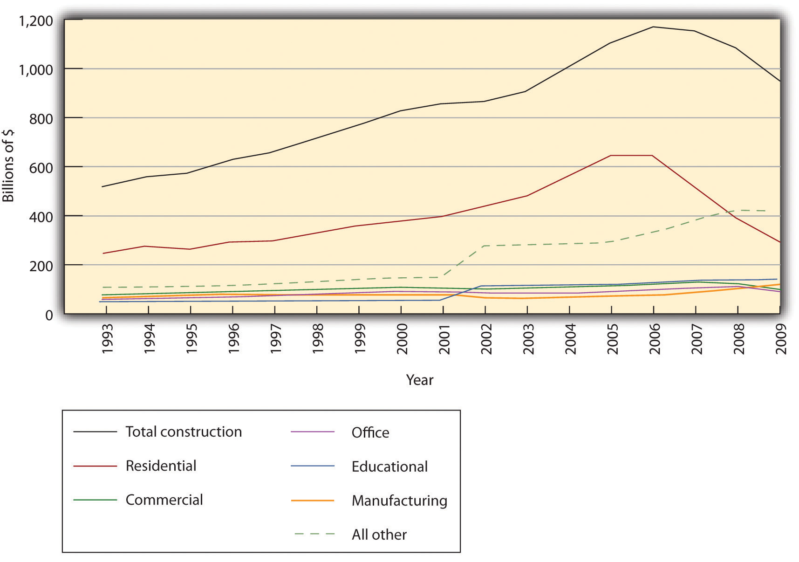Source: Created by author from US Census Bureau data available from http://www.census.gov/const/C30/ototall.xls. The total value put in place for 1993–2009 includes both public and private projects, whereas values for separate categories before 2002 include only private construction since public projects were not disaggregated by category until that time.
Buildings, however, have some characteristics that can impede environmental design. They have a thirty- to forty-year life cycle from planning, design, and construction through operations and maintenance (O&M) and renovation to ultimate demolition or recycling. This long, varied life span requires advance planning to maximize environmental benefits and minimize harm and can lock older, less efficient, or hazardous technologies such as asbestos or lead paint in place. Indeed, advance planning is key. Structural and site design is the most important factor determining performance and cost throughout a building’s life.
Figure 7.9 PNC Firstside Center
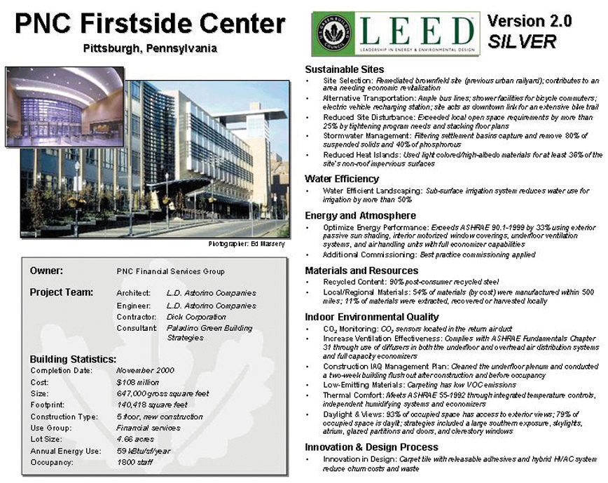Source: US Green Building Council: Overview,” 2008, accessed March 7, 2011, http://leedcasestudies.usgbc.org/overview.cfm?ProjectID=62.
Buildings also involve multiple stakeholders, which can complicate optimization of the system. Costs are borne by one or more parties, such as owners, operators, and tenants. This division can hamper maximizing the overall efficiency of the building, as various groups vie for their own advantage or simply fail to coordinate their efforts. Wages and benefits paid to occupant employees dwarf all other expenses but are typically not included in building life-cycle costs. Depending on the arrangement, a tenant may pay for most of O&M but have had no say in the original design or site selection. A system such as LEED can make all parties aware of environmental performance and thus help them collaborate to improve it while also assuring others that the building has been designed to a certain standard.
USGBC created the LEED Green Building rating system to, in the council’s words, transform the building market by doing the following:
To achieve these goals, LEED provides a comprehensive framework for assessing the environmental performance of a building over its lifetime as measured through the following categories (Table 7.1 "LEED for New Construction Rating System"):
Projects within a given LEED rating system can earn points in each category and all points are equal, no matter the effort needed to achieve them. For instance, installing bike racks and a shower in an office building can earn one point for Sustainable Sites, as can redeveloping a brownfield. Merely including a LEED Accredited Professional (LEED AP) on the design team earns a point for Innovation and Design. The same action could also earn multiple points across categories. Installing a green roof could potentially manage storm water runoff, mitigate a local heat island, and restore wildlife habitat. The most points are concentrated in energy efficiency, which accounts for nearly one-third of all possible points (Figure 7.10 "LEED Points"). Under LEED 3, released in 2009, once a project gains 40 of the possible 110 points and meets certain prerequisites, such as collecting recyclable materials, it can apply for LEED Basic certification. (The criteria are slightly different for LEED for residences.) This point system makes LEED flexible about how goals are met, rewards innovative approaches, and recognizes regional differences. This systems perspective distinguishes LEED from conventional thinking.
Figure 7.10 LEED Points
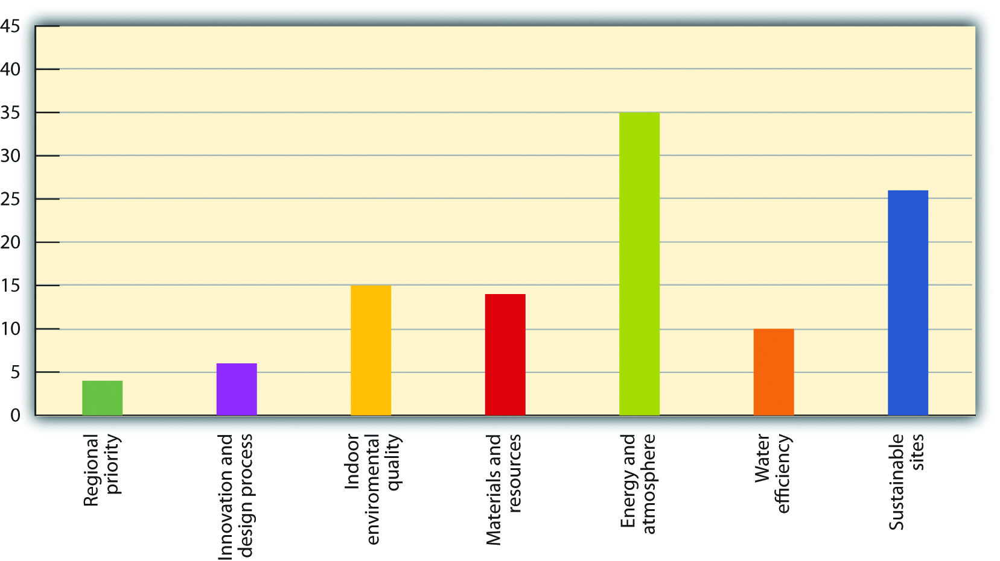Source: US Green Building Council, “LEED for New Construction and Major Renovation,” accessed March 7, 2011, http://www.usgbc.org/ShowFile.aspx?DocumentID=1095. This point distribution is for LEED-NC. LEED for schools, commercial interiors, core and shell, and so on vary slightly in their distribution but have a similar emphasis on energy efficiency.
Table 7.1 LEED for New Construction Rating System
| Sustainable Sites | 26 | |
| Prereq 1 | Construction Activity Pollution Prevention | 0 |
| Credit 1 | Site Selection | 1 |
| Credit 2 | Development Density and Community Connectivity | 5 |
| Credit 3 | Brownfield Redevelopment | 1 |
| Credit 4.1 | Alternative Transportation—Public Transportation Access | 6 |
| Credit 4.2 | Alternative Transportation—Bicycle Storage and Changing Rooms | 1 |
| Credit 4.3 | Alternative Transportation—Low-Emitting and Fuel-Efficient Vehicles | 3 |
| Credit 4.4 | Alternative Transportation—Parking Capacity | 2 |
| Credit 5.1 | Site Development—Protect or Restore Habitat | 1 |
| Credit 5.2 | Site Development—Maximize Open Space | 1 |
| Credit 6.1 | Stormwater Design—Quantity Control | 1 |
| Credit 6.2 | Stormwater Design—Quality Control | 1 |
| Credit 7.1 | Heat Island Effect—Nonroof | 1 |
| Credit 7.2 | Heat Island Effect—Roof | 1 |
| Credit 8 | Light Pollution Reduction | 1 |
| Water Efficiency | 10 | |
| Prereq 1 | Water Use Reduction—20% Reduction | 0 |
| Credit 1 | Water Efficient Landscaping | 2 to 4 |
| Credit 2 | Innovative Wastewater Technologies | 2 |
| Credit 3 | Water Use Reduction | 2 to 4 |
| Energy and Atmosphere | 35 | |
| Prereq 1 | Fundamental Commissioning of Building Energy Systems | 0 |
| Prereq 2 | Minimum Energy Performance | 0 |
| Prereq 3 | Fundamental Refrigerant Management | 0 |
| Credit 1 | Optimize Energy Performance | 1 to 19 |
| Credit 2 | On-Site Renewable Energy | 1 to 7 |
| Credit 3 | Enhanced Commissioning | 2 |
| Credit 4 | Enhanced Refrigerant Management | 2 |
| Credit 5 | Measurement and Verification | 3 |
| Credit 6 | Green Power | 2 |
| Materials and Resources | 14 | |
| Prereq 1 | Storage and Collection of Recyclables | 0 |
| Credit 1.1 | Building Reuse—Maintain Existing Walls, Floors, and Roof | 1 to 3 |
| Credit 1.2 | Building Reuse—Maintain 50% of Interior Nonstructural Elements | 1 |
| Credit 2 | Construction Waste Management | 1 to 2 |
| Credit 3 | Materials Reuse | 1 to 2 |
| Credit 4 | Recycled Content | 1 to 2 |
| Credit 5 | Regional Materials | 1 to 2 |
| Credit 6 | Rapidly Renewable Materials | 1 |
| Credit 7 | Certified Wood | 1 |
| Indoor Environmental Quality | 15 | |
| Prereq 1 | Minimum Indoor Air Quality Performance | 0 |
| Prereq 2 | Environmental Tobacco Smoke (ETS) Control | 0 |
| Credit 1 | Outdoor Air Delivery Monitoring | 1 |
| Credit 2 | Increased Ventilation | 1 |
| Credit 3.1 | Construction IAQ Management Plan—During Construction | 1 |
| Credit 3.2 | Construction IAQ Management Plan—Before Occupancy | 1 |
| Credit 4.1 | Low-Emitting Materials—Adhesives and Sealants | 1 |
| Credit 4.2 | Low-Emitting Materials—Paints and Coatings | 1 |
| Credit 4.3 | Low-Emitting Materials—Flooring Systems | 1 |
| Credit 4.4 | Low-Emitting Materials—Composite Wood and Agrifiber Products | 1 |
| Credit 5 | Indoor Chemical and Pollutant Source Control | 1 |
| Credit 6.1 | Controllability of Systems—Lighting | 1 |
| Credit 6.2 | Controllability of Systems—Thermal Comfort | 1 |
| Credit 7.1 | Thermal Comfort—Design | 1 |
| Credit 7.2 | Thermal Comfort—Verification | 1 |
| Credit 8.1 | Daylight and Views—Daylight | 1 |
| Credit 8.2 | Daylight and Views—Views | 1 |
| Innovation and Design Process | 6 | |
| Credit 1.1 | Innovation in Design: Specific Title | 1 |
| Credit 1.2 | Innovation in Design: Specific Title | 1 |
| Credit 1.3 | Innovation in Design: Specific Title | 1 |
| Credit 1.4 | Innovation in Design: Specific Title | 1 |
| Credit 1.5 | Innovation in Design: Specific Title | 1 |
| Credit 2 | LEED Accredited Professional | 1 |
| Regional Priority Credits | 4 | |
| Credit 1.1 | Regional Priority: Specific Credit | 1 |
| Credit 1.2 | Regional Priority: Specific Credit | 1 |
| Credit 1.3 | Regional Priority: Specific Credit | 1 |
| Credit 1.4 | Regional Priority: Specific Credit | 1 |
| Total | 110 | |
Source: US Green Building Council, “LEED for New Construction and Major Renovation,” accessed March 7, 2011, http://www.usgbc.org/ShowFile.aspx?DocumentID=1095.
LEED has been amended regularly to respond to emerging needs. Partly in reaction to criticism that LEED focused too narrowly on new commercial construction, USGBC developed different LEED rating systems for different types of projects. In addition to the original LEED for New Construction and Major Renovation (LEED-NC), there are now LEED for Schools, LEED for Existing Building Operations and Maintenance (LEED-EB O&M), LEED for Commercial Interiors (LEED-CI), and LEED for Core and Shell (LEED-CS), all of which use the above categories and have similar, albeit slightly different, distributions of the 110 possible points among the categories.Rating systems are available at US Green Building Council, “LEED Resources and Tools: LEED 2009 Addenda,” accessed September 3, 2010, http://www.usgbc.org/DisplayPage.aspx?CMSPageID=2200#BD+C. The more recent LEED for Neighborhood Development (LEED-ND) and LEED for Homes have the same point approach but different categories. LEED-ND awards points for Innovation and Design and Regional Priorities plus Smart Location and Linkage, Neighborhood Pattern and Design, and Green Infrastructure and Buildings. LEED for Homes largely follows the categories of other building types but also has Locations and Linkages distinct from Sustainable Sites to encourage walking, infill, and so forth; Awareness and Education to encourage homeowners to educate others; and a Home Size Adjustment to acknowledge that bigger homes, efficiency notwithstanding, consume more resources than smaller ones. LEED for Homes also has 136, not 110, possible points with a lower threshold for Basic certification. LEED for Retail and LEED for Healthcare (versus more generic commercial buildings covered by LEED) were in development as of July 2010 and likely to be launched within a year.
Energy & Atmosphere Credit 1: Optimize Energy Performance 1–10 Points
Intent
Achieve increasing levels of energy performance above the prerequisite standard to reduce environmental impacts associated with excessive energy use.
Requirements
Reduce design energy cost compared with the energy cost budget for energy systems regulated by ASHRAE/IESNA Standard 90.1-1999 (without amendments), as demonstrated by a whole building simulation using the Energy Cost Budget Method described in Section 11 of the Standard.
Table 7.2 Comparison of New versus Existing Buildings
| New buildings (%) | Existing buildings (%) | Points |
|---|---|---|
| 15 | 5 | 1 |
| 20 | 10 | 2 |
| 25 | 15 | 3 |
| 30 | 20 | 4 |
| 35 | 25 | 5 |
| 40 | 30 | 6 |
| 45 | 35 | 7 |
| 50 | 40 | 8 |
| 55 | 45 | 9 |
| 60 | 50 | 10 |
Source: Data from ASHRAE/IESNA Standard 90.1-1999.
Regulated energy systems include heating, cooling, fans, and pumps (HVAC), service hot water, and interior lighting. Nonregulated systems include plug loads, exterior lighting, garage ventilation and elevators (vertical transportation). Two methods can be used to separate energy consumption for regulated systems. The energy consumption for each fuel may be prorated according to the fraction of energy used by regulated and nonregulated energy. Alternatively, separate meters (accounting) may be created in the energy simulation program for regulated and nonregulated energy uses.
If an analysis has been made comparing the proposed design to local energy standards and a defensible equivalency (at minimum) to ASHRAE/IESNA Standard 90.1-1999 has been established, then the comparison against the local code may be used in lieu of the ASHRAE
Standard Project teams are encouraged to apply for innovation credits if the energy consumption of nonregulated systems is also reduced.
Optimize Energy Performance: 1–10 Points
Submittals
Complete the LEED Letter Template incorporating a quantitative summary table showing the energy-saving strategies incorporated in the building design.
Demonstrate via summary printout from energy simulation software that the design energy cost is less than the energy cost budget as defined in ASHRAE/IESNA 90.1-1999, Section 11.
Potential Technologies and Strategies
Design the building envelope and building systems to maximize energy performance. Use a computer simulation model to assess the energy performance and identify the most cost-effective energy efficiency measures. Quantify energy performance as compared with a baseline building.Reprinted courtesy of the US Green Building Council, LEED 2009 for New Construction and Major Renovations Rating System (Washington DC: US Green Building Council, 2009), last updated October 2010, accessed January 31, 2011, http://www.usgbc.org/DisplayPage.aspx?CMSPageID=220&.
To be LEED certified, a project is first registered for a few hundred dollars with the Green Building Certification Institute (GBCI), an independent spin-off of USGBC that assumed sole responsibility for LEED certifying buildings and training LEED APs in 2009. Documentation is gathered to demonstrate compliance with LEED criteria and then submitted to the GBCI along with another fee, over $2,000 for an average project, for certification. Bigger projects cost more to certify, and higher levels of certification are available with more points: 50 points earns Silver, 60 Gold, and 80 or more Platinum (Figure 7.11 "LEED Certification Levels"). Higher certification typically correlates with less energy use. A 2008 study by USGBC and the New Buildings Institute found that in the United States, newly built LEED Basic commercial buildings (including offices and laboratories) used 24 percent less energy per square foot than the average of all commercial building stock, while LEED Gold and Platinum buildings used 44 percent less energy than the average. Just over half of the LEED buildings, however, performed significantly better or worse than predicted at the outset of the project, with one quarter actually consuming more energy than the code baseline.Cathy Turner and Mark Frankel (New Buildings Institute), Energy Performance of LEED for New Construction Buildings (Washington DC: US Green Building Council, 2008), accessed January 31, 2011, http://www.usgbc.org/ShowFile.aspx?DocumentID=3930.
Figure 7.11 LEED Certification Levels
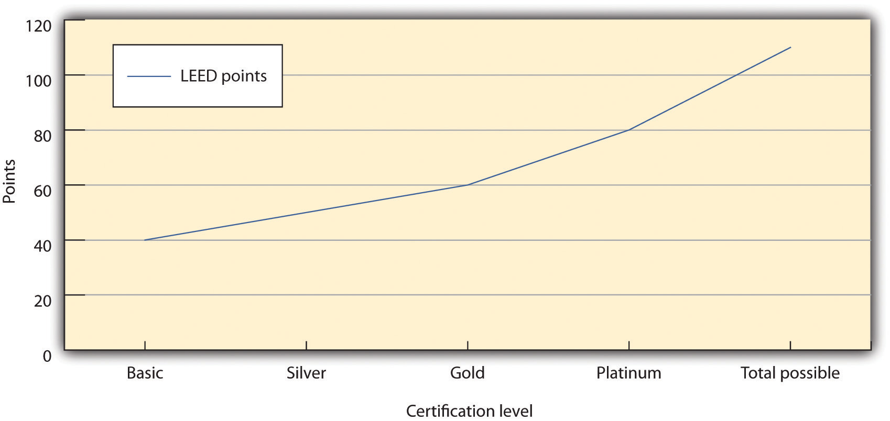Source: US Green Building Council, “LEED 2009: Technical Advancements to the LEED Rating System,” accessed March 7, 2011, http://www.usgbc.org/DisplayPage.aspx?CMSPageID=1971. These point values apply to all LEED rating systems except LEED for Homes.
LEED 3 was intended to address some of these prediction problems as well as criticisms that LEED could reward, for instance, a building for air-conditioning the desert as long as it did so more efficiently than comparable buildings. LEED 3 added online tools to facilitate planning and certification. It also harmonized criteria among its rating systems for different types of projects and added points to categories that made a larger overall difference in energy use, such as building near existing public transportation infrastructure instead of a more remote location. LEED already had been twice revised prior to LEED 3, and USGBC continues to support LEED as it evolves and expands.
To simplify use and speed adoption, LEED refers to existing industry standards of practice. LEED for Homes specifies ANSI (American National Standards Institute) Z765 for calculating square footage for the Home Size Adjustment. LEED for Operations and Maintenance adheres to ASHRAE (American Society of Heating, Refrigeration, and Air-Conditioning Engineers) standards for ventilation and various American Standards for Testing and Materials (ASTM) standards for lighting and reflectance.
Many credits require submission of a letter signed by the architect, engineer, owner, or responsible party and verification of the claims in language provided by a specific LEED template. To maintain the credibility of the third-party rating system, claims to credits are subject to auditing by GBCI.
There are multiple aspects of green building cost and benefits. For LEED certification in particular, direct project costs include the administrative costs of the application process and fees, which can run into the thousands of dollars, as well as the financial impacts on building design, construction, and operation, due to implementation of LEED-related measures. These costs should be evaluated in terms of total cost of ownership, including both first costs and operating costs over the building’s life cycle. Indirect costs are often harder to assess but are worthy of consideration.
Green building can add little to nothing to total design and construction cost, at least for the lower levels of LEED certification or equivalent green building codes. A study by global construction consultant Davis Langdon in 2006 found “no significant difference in average costs for green buildings as compared to nongreen buildings. Many project teams are building green buildings with little or no added cost to the amount a traditional building costs, and with budgets well within the cost range of nongreen buildings with similar programs.”Davis Langdon, Cost of Green Revisited: Reexamining the Feasibility and Cost Impact of Sustainable Design in the Light of Increased Market Adoption, July 2007, accessed January 28, 2011, http://www.centerforgreenschools.org/docs/cost-of-green- revisited.pdf. Green design may require particular attention and effort in the initial phases, and design costs are generally higher, but more and more firms see green as part of the standard package, not an addition. Other studies of specific buildings by the GSA and various organizations found that green design might cost a few percentage points more but significantly reduced operating costs and improved occupant comfort.Steven Winter Associates Inc., GSA LEED Cost Study, October 2004, accessed January 28, 2011, http://www.wbdg.org/ccb/GSAMAN/gsaleed.pdf; US Green Building Council–Chicago Chapter, Regional Green Building Case Study Project: A Post-Occupancy Study of LEED Projects in Illinois, Fall 2009, accessed January 28, 2011, http://www.usgbc-chicago.org/wp-content/uploads/2009/08/Regional-Green- Building-Case-Study-Project-Year-1-Report.pdf. The City of Portland, Oregon, for example, had eighteen LEED buildings in 2004 and saved more than $1 million per year in avoided wastewater treatment costs and another $1 million a year in lower energy bills.Mike Italiano (board member, US Green Building Council), personal communication, March 14, 2003.
In some cases, highly innovative design features might retard both market and regulatory acceptance of green buildings (especially at the local level where green design knowledge may be low), slowing the project timetable and increasing costs. For example, regulators who are unfamiliar with constructed wetlands might doubt their effectiveness as a way to reduce the impacts of storm water runoff. Similarly, the real estate market in some areas, due to a lack of familiarity, might question the value of a geothermal heating system, or condo association rules might prohibit a supplemental solar electric system.
Nonetheless, green building, especially when certified to LEED or another standard, offers many benefits. Environmentally, it reduces the strain on the local ecosystem, conserves resources and habitat, and improves indoor air quality. Economically, green building lowers operating costs, can garner tax incentives, improves public image, can lower insurance costs, improves employee productivity and attendance, and increases market value. Indeed, in a 2008 study, Piet Eichholtz and collaborators compared 700 hundred Energy Star and LEED-certified office buildings to 7,500 conventional ones and found that the green office buildings had higher occupancy rates and could charge slightly higher rents, making the market value of a green building typically $5 million greater than its conventional equivalent.The report states, “The results show that large increases in the supply of green buildings during 2007–2009, and the recent downturns in property markets, have not significantly affected the rents of green buildings relative to those of comparable high quality property investments; the economic premium to green building has decreased slightly, but rents and occupancy rates are still higher than those of comparable properties.” The report also concludes that green certification commands higher rental premiums and asset value at resale: “We find that green buildings have rents and asset prices that are significantly higher than those documented for conventional office space, while controlling specifically for differences in hedonic attributes and location using propensity score weights.” Piet Eichholtz, Nils Kok, and John M. Quigley, The Economics of Green Building, 3, 20, accessed January 26, 2011, http://www.ctgbc.org/archive/EKQ_Economics.pdf.
Given these benefits, green building will likely expand. With so much money on the line, the need for verified environmental performance and design standards will remain strong.
Despite growth in the green building market, in 2009, $42 billion represented less than 10 percent of total building construction. One criticism of LEED is that as a voluntary standard, it does not force enough change fast enough. Public policy analyst David Hart concluded LEED “is inevitably bumping up against its limits” and does not “act assertively to pull along the trailing edge of ‘brown building’ practice.”David M. Hart, “Don’t Worry About the Government? The LEED-NC ‘Green Building’ Rating System and Energy Efficiency in US Commercial Buildings” (MIT-IPC-Energy Innovation Working Paper 09-001, Industrial Performance Center, Massachusetts Institute of Technology, 2009), accessed January 31, 2011, http://web.mit.edu/ipc/publications/pdf/09-001.pdf. As more governments and organizations adopt LEED or similar standards because it gives them an established, reliable metric, the market could shift more quickly toward greener construction.
A second persistent criticism of LEED has been that basic certification doesn’t represent much improvement over conventional building. As recently as 2010, renowned architect Frank Gehry criticized LEED for crediting “bogus stuff” that doesn’t truly pay off.Blair Kamin, “Frank Gehry Holds Forth on Millennium Park, the Modern Wing, and Why He’s Not into Green Architecture,” Cityscapes (blog), Chicago Tribune, April 7, 2010, accessed January 31, 2011, http://featuresblogs.chicagotribune.com/theskyline/2010/04/looking-down-on-the-stunning-view-of-the-frank-gehry- designed-pritzker-pavilion-from-the-art-institute-of-chicagos-renzo-pian.html. LEED certification in this line of reasoning distracts people from more ambitious targets, and the money spent on registration and certification—ranging from about $2,000 for smaller buildings for USGBC members to $27,500 for larger buildings for nonmembers—could instead be spent on more environmental improvements.For costs, see Green Building Certification Institute, “Current Certification Fees,” 2010, accessed January 31, 2011, http://www.gbci.org/main-nav/building-certification/resources/fees/current.aspx; and Green Building Certification Institute, “Registration Fees,” accessed January 31, 2011, http://www.gbci.org/Certification/Resources/Registration-fees.aspx. For criticism, see Anya Kamenetz, “The Green Standard?,” Fast Company, October 1, 2007, accessed January 31, 2011, http://www.fastcompany.com/magazine/119/the-green-standard.html ?page=0%2C0. Such fees also mean USGBC and GBCI have an economic stake in making LEED the dominant standard of certification. USGBC has even criticized California’s State Building Code for the CalGreen label because USGBC feared the label would create confusion and detract from LEED’s value.“California’s Building Code Turns a Deeper Shade of Green,” Green Business, January 14, 2010, accessed January 31, 2011, http://www.greenbiz.com/news/2010/01/14/californias-building-code-turns-deeper-shade-green.
Finally, LEED unabashedly focuses on energy use as its main criterion for environmental performance. That has led to criticism from the nonprofit Environment and Human Health Inc. (EHHI) that LEED does too little to keep toxic materials out of buildings. An EHHI report from 2010 urged USGBC to discourage “chemicals of concern” such as phthalates and halogenated flame retardants and to include more medical professionals on its board. A USGBC vice president said he was willing to collaborate with critics to improve LEED, provided the expectations were reasonable: “LEED could say there should be no chemicals in any building and no energy used and no water and every building should give back water and energy. We could do all that, and no one would use the rating system. We can only take the market as far as it’s willing to go.”Suzanne Labarre, “LEED Buildings Rated Green…and Often Toxic,” Fast Company, June 3, 2010, accessed January 31, 2011, http://www.fastcompany.com/1656162/are-leed-buildings-unhealthy. Also Tristan Roberts, “New Report Criticizes LEED on Public Health Issues,” Environmental Building News, June 3, 2010, accessed January 31, 2011, http://www.buildinggreen.com/auth/article.cfm/2010/6/3/New-Report- Criticizes-LEED-on-Public-Health-Issues.
Yet LEED seems to have found just where the market is willing to go. Other certification systems exist but have not attained the status that LEED has. Green Globes, for instance, began in 2000, the same year as LEED, and had an online component from its inception. Green Globes offers a similar performance rating system, and certification is often cheaper than LEED. Green Globes is more prevalent in Canada, but in the United States it is being incorporated as ANSI’s official green building standard.Green Globes, “What Is Green Globes?,” accessed September 3, 2010, http://www.greenglobes.com/about.asp. The US EPA also awards Energy Star certification to buildings in the seventy-fifth or higher percentile for energy use in their category. Builders can apply by designing for Energy Star and completing an online application; actual operating data, however, are necessary to earn the final Energy Star label.Energy Star, “The Energy Star for Buildings & Manufacturing Plants,” accessed January 26, 2011, http://www.energystar.gov/index.cfm?c=business.bus_bldgs. There is no fee for certification. Finally, various regional certification programs exist, from EarthCraft in the southeast United States to Build It Green in California. These systems tend to be tailored more specifically to their locations.
Green building has become increasingly desirable. LEED and other certification systems have helped to make it even more desirable by creating trust. Builders, regulators, or the average person can know that LEED certification guarantees a modicum of environmental considerations without having to know a thing about what those are or how they work in the building. LEED in particular has proven powerful and flexible enough to spread internationally and to undergo frequent revision of its existing rating systems and expansion into brand new ones.